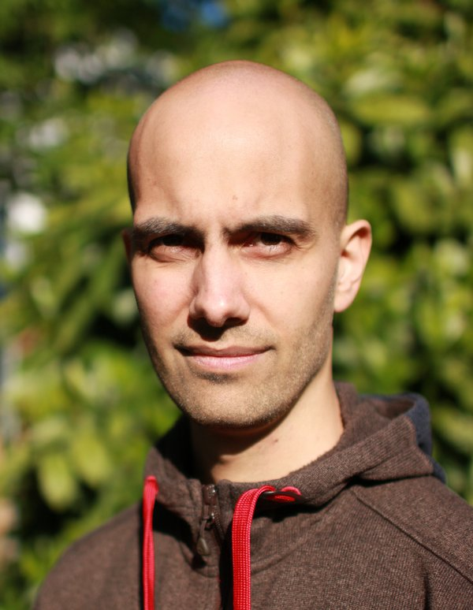
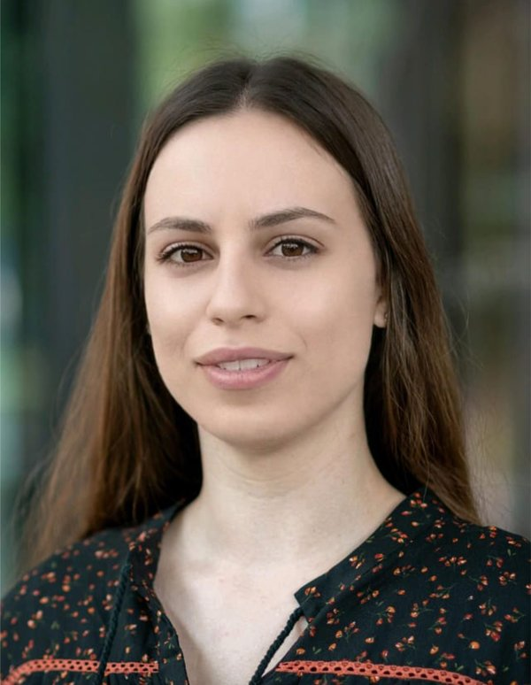
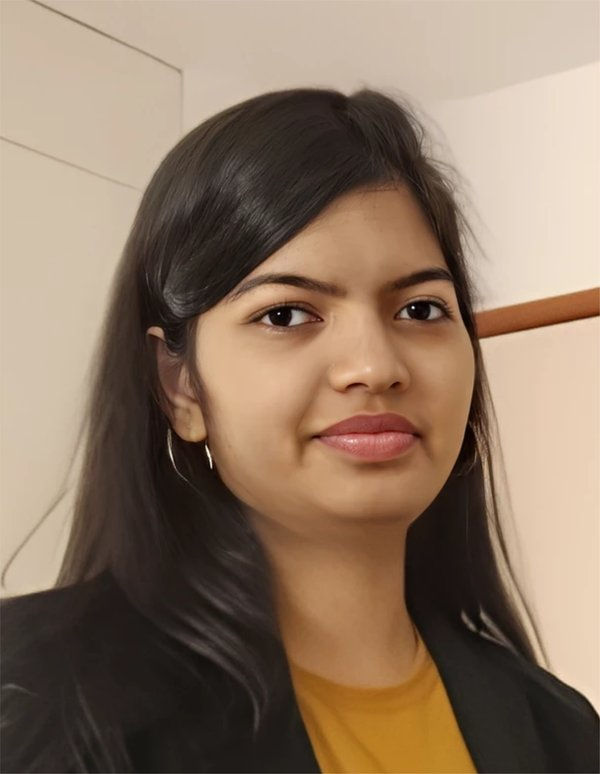
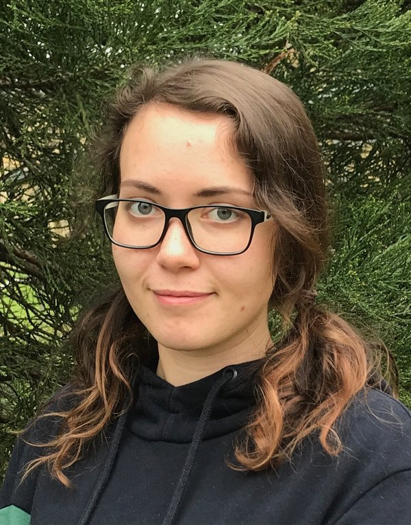
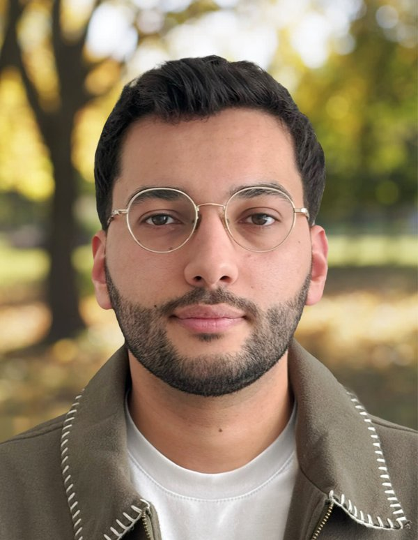
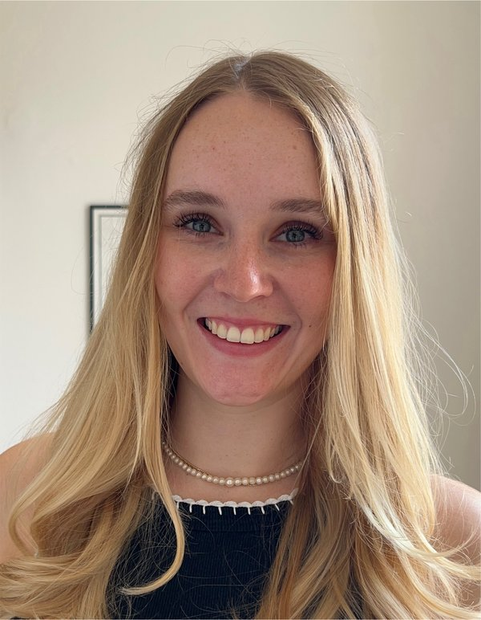
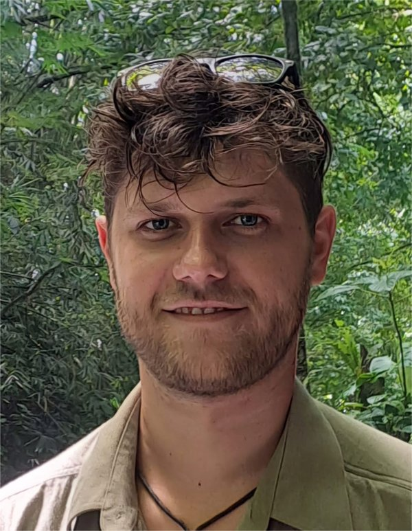

Researcher
Leonardo Oña

- Fellow, College for Life Sciences, Wissenschaftskolleg zu Berlin
Education:
- MSc in Biology, University of Córdoba, 2006
- MSc in Theoretical Physics, Instituto Balseiro, 2007 (Advisor: Guillermo Abramson)
- PhD in Theoretical Biology, Max Planck Institute for Evolutionary Anthropology & University of Leipzig, 2014 (Advisors: Michael Lachmann, Svante Pääbo)
Academic positions:
- Postdoc, University of Groningen, 2013–2016 (PI: Sander van Doorn)
- Senior Research Fellow, Osnabrück University, 2017–2026 (PI: Christian Kost)
PhD students
Maria Kostakou (co-supervised with Dr. Stephanie Jurburg)

- PhD student, Microbial Interaction Ecology, Helmholtz Centre for Environmental Research, Leipzig
Education:
- MSc in Systems Biology, School of Biotechnology of the Agricultural University of Athens, 2019
Research Interest: Spatial assembly in soil microbial communities across scales, land cover, and land use
Shalu Dwivedi (co-supervised with Prof. Dr. Stefan Schuster)

- PhD student, Department of Bioinformatics, Friedrich Schiller University Jena
Education:
- MSc in Fundamental Data Science, Grenoble Alpes University, France, 2019
- Assistant Professor in Department of Mathematics, Shri Ramswaroop Memorial University, Lucknow, India, 2014–2017
- MSc in Applied Mathematics, Indian Institute of Technology Roorkee, India, 2013
Research Interest: Modeling and computer simulation of biochemical defense and evasion mechanisms
Master's students
Anna Milchin

Education:
- BSc in Ecology, University of Osnabrück, 2020
Research Interest: The role of demographic stochasticity and space affecting chaotic dynamics and the paradox of the phytoplankton
Badis Gazbar

Education:
- BSc in Neurobiology, University of Düsseldorf, 2020
Research Interest: Constitutive and induced responses in host–parasite interaction networks
Nele-Carolin Sommer

Education:
- BSc in Ecology, University of Osnabrück, 2023
Research Interest: Understanding the influence of species-specific dispersal rates and interaction partners on ecological network structure
Bachelor's students
Finn Dinnus

Research Interest: The fitness effects of partner loss in free-living mutualistic associations